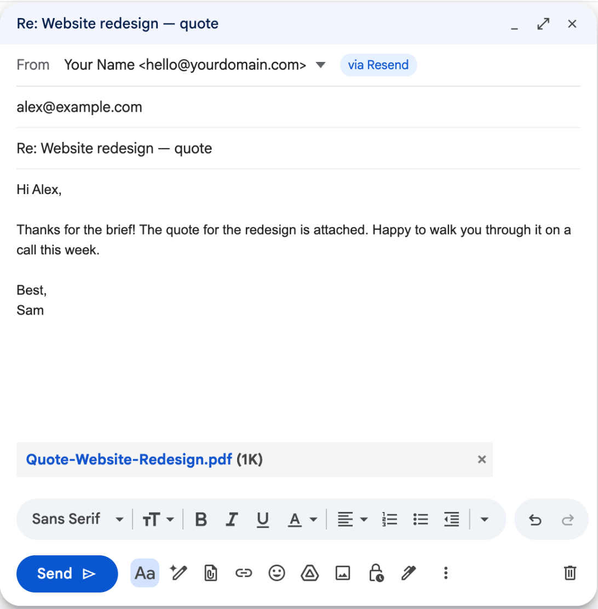

SendAs Bridge adds a From row to Gmail. Pick your own address, write as usual, and your email goes out through your own email provider — with attachments, pictures and replies that stay in the same conversation.
Free for one address · No servers · Your keys never leave your browser

via Resend">Google's help page says that in January 2027 Gmail removes “Send as” for addresses it doesn't host, on the web and in the mobile apps, along with Gmailify and POP fetching — and restricts new setups before that (Google Help). If you receive your domain's mail in Gmail through Cloudflare Email Routing, ImprovMX or your registrar's forwarding and reply with “Send mail as”, the receiving half keeps working; the sending half stops.
Use a free plan at Resend, Brevo, SMTP2GO and others, or Amazon SES. Verify your domain there and paste an API key into SendAs Bridge.
Every compose window gets a From row. Replies automatically use the address the email was sent to.
The message goes out from your domain through your provider. A copy lands in your Gmail conversation, and the draft is cleaned up.
In-Reply-To and References headers from the original message, the “Re:” subject and the quoted history, exactly like Gmail.
Files you attach, screenshots you paste and images in the quoted message are all sent properly (inline, not as links).
Each message is Bcc'd to your Gmail and appears in the conversation. A one-click Gmail filter labels it and keeps it out of your inbox.
A short countdown after you click Send, like Gmail's own Undo. Cmd/Ctrl+Enter works too.
Reads your SPF, DKIM, DMARC and MX records and says in plain words what to fix — including merging two SPF records into one.
No servers, no accounts, no analytics. API keys stay in your browser, optionally encrypted with a passphrase.
Pick one with a free plan if you don't have one yet. Step-by-step setup guides →
| Free | Pro — $19 once | |
|---|---|---|
| Send from your own address in Gmail | 1 address | Unlimited addresses and domains |
| Attachments, inline images, reply threading | ✓ | ✓ |
| Copy in Gmail, Undo send, domain check | ✓ | ✓ |
| Several email providers | – | ✓ |
| Catch-all addresses (*@yourdomain.com): reply from whichever address was written to | – | ✓ |
Pro is a lifetime license for up to 5 browsers, sold through Gumroad with a 30-day money-back guarantee. Compare: Google Workspace starts at about $7 per user per month. See the cost comparison →
Yes. Google's help page "Learn about changes to third-party email account support in Gmail" says that in January 2027 Gmail removes "Send as" for third-party addresses on the web and in the mobile apps, together with Gmailify and POP fetching, and that new setups are restricted before then. Send-as for Gmail addresses and Google Workspace aliases keeps working.
You keep receiving your domain's mail in Gmail through forwarding (Cloudflare Email Routing, ImprovMX, your registrar…). When you write or reply in Gmail and pick your own address in the From row, SendAs Bridge takes the message you wrote and sends it through your own email provider's API (Resend, Brevo, SMTP2GO, Amazon SES and others), then removes the Gmail draft.
No. SendAs Bridge never asks for your Gmail password, Google tokens or your email password. It uses an API key from your own email provider. The key stays in your browser, and you can revoke it in the provider's dashboard at any time.
No. There are no SendAs Bridge servers. Your browser talks directly to the email provider you chose. The only other request is a license check with Gumroad if you buy Pro.
Yes. SendAs Bridge copies the original message's Message-ID into the In-Reply-To and References headers and keeps the "Re:" subject, the same way Gmail does, so recipients see one thread. A copy of what you sent is Bcc'd to your Gmail so it appears in your own conversation too.
The free version sends from one address with every sending feature: attachments, inline images, reply threading, Undo and the domain check. Pro is a one-time $19 for unlimited addresses and domains, several providers and catch-all addresses. Most email providers have a free plan that easily covers personal mail.
No. Browser extensions run in desktop Chrome and Edge. Gmail's mobile apps lose "Send as" for other addresses too, so on the phone you can read your mail and reply later from the computer.
Not today. Email providers can only send for domains you control in DNS, so SendAs Bridge works with your own domain (for example you@yourname.com).
Set up takes about 10 minutes with a free provider.